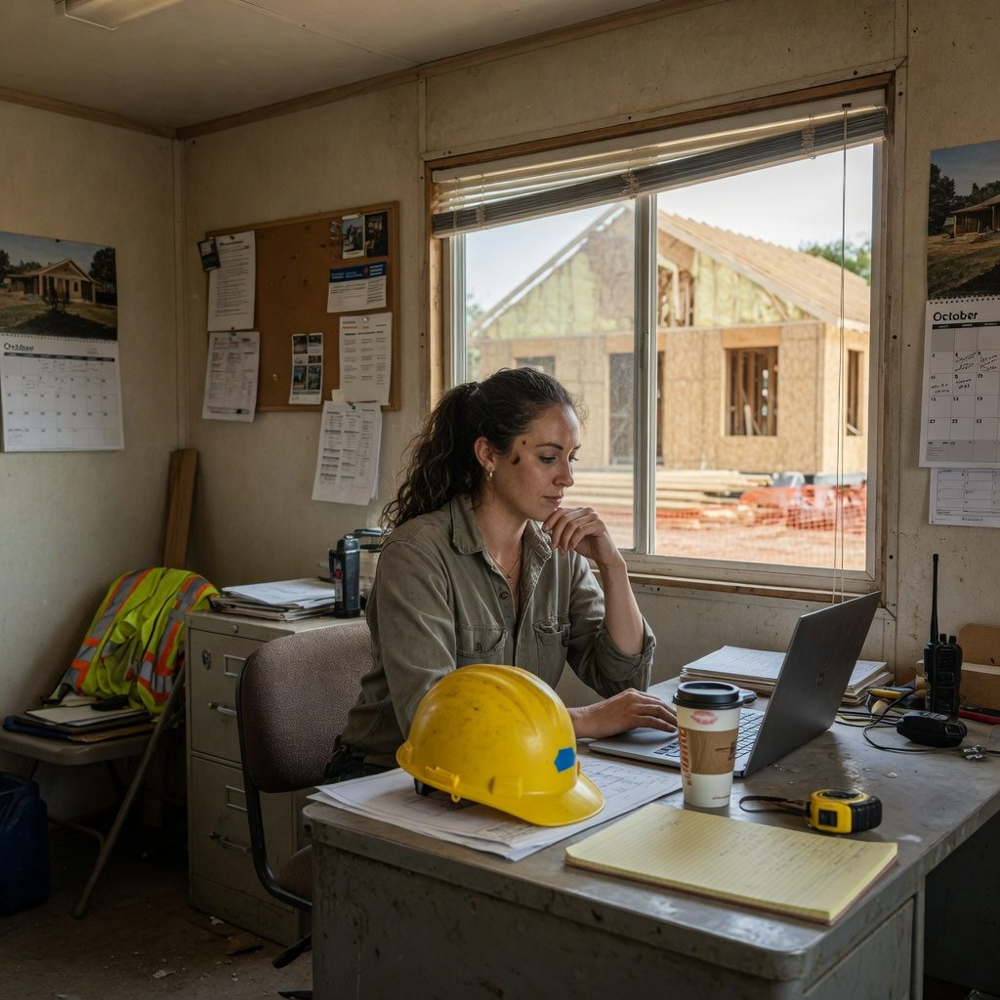

← LOJO Network
Sixteen ad options — private network + private LLM
Same offer, different businesses — shops, field ops, ranching, oil & gas, IoT, remote sensing, and more. Every unit is a private network for phones, sites, and equipment, plus an optional private LLM that stays on your machines — not a public chatbot. Destination: the site. CTA: email team@lojo.engineering.
Network + private LLM
lojo.engineering Job-site files on your phone. A private LLM that stays on your machines.
Plans, photos, and questions never go to a public chatbot. We set up the network. You tap Connect.

Network + private LLM
lojo.engineering The trailer talks to the office. Your private LLM answers from the job, not the public internet.
One bill. You do not become the IT department. Email team@lojo.engineering.
Network + private LLM
lojo.engineering Store systems from the floor. A private assistant for ordering — not a public chatbot.
Phones on a private network. Your prices and vendors stay in the store.
Network + private LLM
lojo.engineering Back-office AI on a private network. Numbers never leave the store.
Reach the office from a phone. Ask your own model. We set it up.
Network + private LLM
lojo.engineering A modern shop, a private network, a private LLM.
Staff phones reach the register computer. Questions stay off ChatGPT. One bill.
Network + private LLM
lojo.engineering Warehouse tablets on a private network. Inventory AI that stays yours.
Dock, office, and phones on one network. No public chatbot seeing your counts.
Network + private LLM
lojo.engineering Dock to office, one private network. Private LLM for routing and orders.
We set it up. You tap Connect. Email team@lojo.engineering.

Network + private LLM
lojo.engineering Engineering files stay on your network. A private LLM for specs — not a public chatbot.
Phones and laptops reach the office. Models stay on your machines.
Network + private LLM
lojo.engineering Two offices, one private network. Ask your own model.
Drawings, chat, and phones stay off the public internet. We run the network.

Network + private LLM
lojo.engineering Your own LLM in the back room. Reach it from any phone on the private network.
Not ChatGPT. Not a public cloud. One bill. Email team@lojo.engineering.

Network + OT security
lojo.engineering Wellsites and tank batteries on a private network — not the public internet.
SCADA paths, phones, and field laptops. We set it up. You tap Connect.

Network + IoT
lojo.engineering IoT products and gateways on one managed private fabric.
Devices, support laptops, and your optional private LLM — off the open web.
Network + field ops
lojo.engineering Field trucks reach the shop systems without punching holes in the firewall.
Equipment, diagnostics, and phones on a private network. One bill.

Network + remote sensing
lojo.engineering Towers and instrument pads on a managed private link.
Telemetry stays private. Your team reaches it securely. We run the network.

Network + ranch ops
lojo.engineering Close the trap from your phone. Cameras stay in their own apps.
Eight years remote New Mexico. Cattle and wild horses. Cell or Starlink. We run the private network.

Network + latch control
lojo.engineering A small controller at the pen. Latch over LOJO. Video separate.
Managed private network for ranch and field ops. One bill. Email team@lojo.engineering.